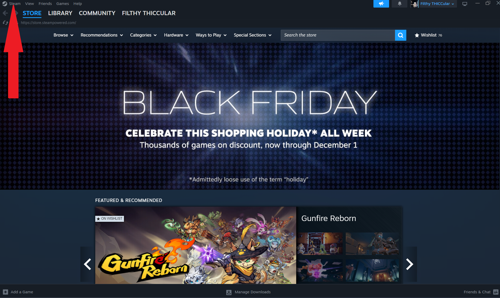
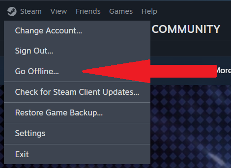
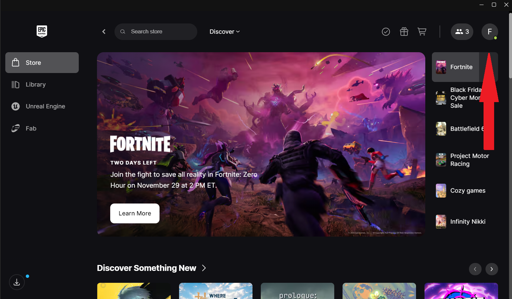
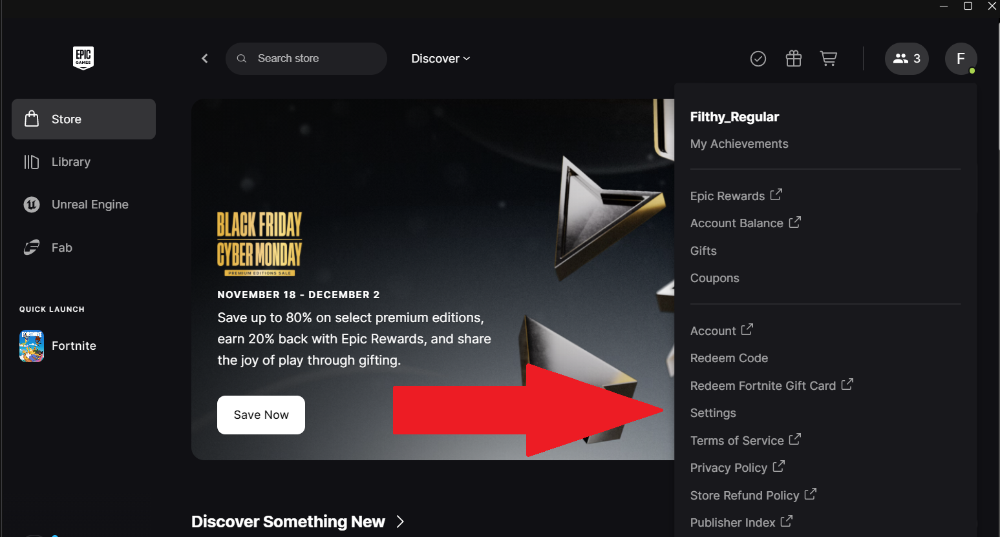
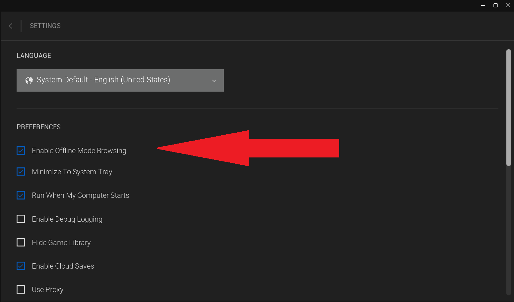

Because a large amount of people can be playing on the same account at the same time, there can be time conflicts.
This means that if two people play online at the same time, you will likely be unable to open your game until the first person gets off, goes offline, or is kicked off by you.
To avoid this on both sides, if you are not playing a game that requires an internet connection, then PLEASE play offline.
If playing on Steam:


If playing on Epic Games Launcher:



You can reverse these steps at anytime to go back online.
If you encounter any issues, refer to the FAQ.